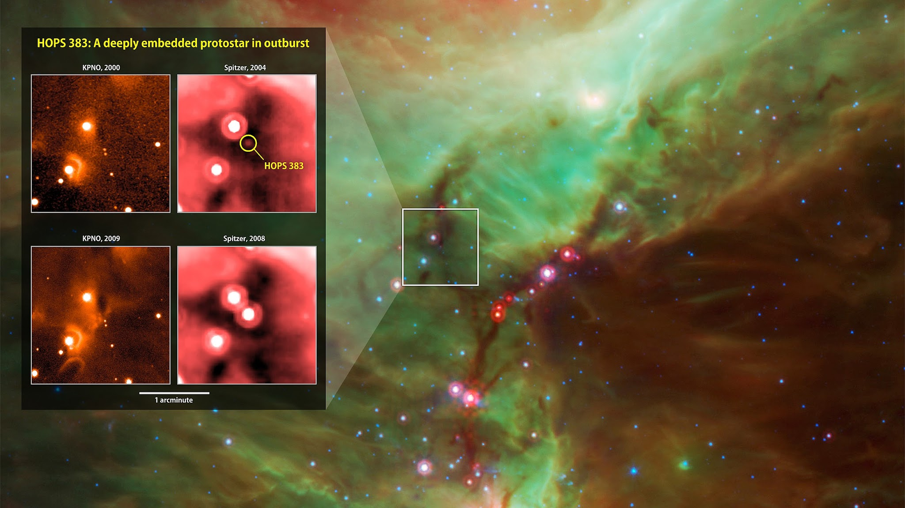
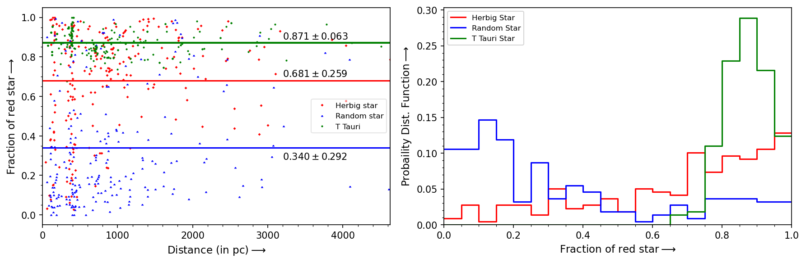

The Copernican principle states that the Earth is not a special location in the Universe. However, so far this is the only planet known to humankind which can support life. This is why we have always been curious to know whether intelligent life exists in some other parts of the universe or not. Humans have collectively spent 60- plus years in Searching for Extraterrestrial Intelligence (SETI), without any success so far. This is known as the Fermi paradox.
Many efforts have been made throughout history to resolve this paradox in several ways. One such approach is to search for Dyson Spheres (Dyson, 1960), a hypothetical megastructure built by advanced extraterrestrial civilizations around their host star for harvesting its radiation energy. The aim of SETI is to search for observational signatures of Dyson spheres, which are marked by a change in the spectrum of the star. This change is expected to be in the form of waste heat from the absorbing structure (radiation emitted in the infrared) and obscuration of direct starlight.
Suazo et al. (2022) had identified a tentative list of DS candidates in the Milky Way by fitting Spectral Energy Distribution (SED) based model of DS with observed data through GAIA, SDSS, DSS in optical band and 2MASS, WISE in infrared band. It has been observed, though very rarely, that some stars do exhibit the spectral energy distributions of the type predicted for Dyson spheres. In most cases, there may be astrophysical explanations for this behaviour. In this category, we primarily find Young Stellar Objects (YSOs), which are mostly located in nebular regions. Suazo et al. 2023 (in prep.) have developed a Convolution Neural Network (CNN) based image classifier to classify stars into two categories depending on whether they belong to a nebular or non-nebular region by analyzing W3 images of sources in WISE survey. However, this algorithm fails sometimes to detect any nebular feature surrounding a star having the signature of a Dyson sphere even though literature surveys indicate that the star is very young.
In this thesis, we present a technique, which can further filter out the false-positive Dyson sphere candidates using the phenomenon of dust reddening. This happens due to the fact that the shorter wavelength lights get absorbed and scattered by dust particles from the surrounding nebula of a target star while longer wavelength lights pass through it. This results in a higher fraction of red stars in a nebular region than in a non-nebular region within a certain angular radius around the target star. We use this as the basic principle for our filtration technique. Our analysis shows that the fraction of neighbouring red stars for YSOs (like Herbig Ae/Be and T-Tauri star) around a search radius of 6 arc minutes is greater than that of the randomly chosen main sequence star. Using a sample of 218 randomly chosen main sequence, Herbig Ae/Be and T-Tauri stars, we find that the average fraction of red stars for Herbig Ae/Be is 0.681 ± 0.259 and T Tauri star is 0.871 ± 0.063 while the average fraction of neighbouring red stars for a randomly chosen main sequence star is 0.340±0.292.
By analyzing the fraction of neighboring red stars for all 302 DS candidates, we were able to distinguish between Dyson Sphere candidates located within nebular regions and those outside. This parameter, combined with manual inspection of DS candidates across multiple databases, led us to discard 136 contaminated candidates out of the original 302. These were eliminated due to factors such as blending with nearby sources, irregular structure in the WISE data, and faintness. We are planning to conduct detailed follow-up observations on the remaining 166 candidates, focusing on our best Dyson Sphere candidates.
Full thesis can be found here.
Download PDF